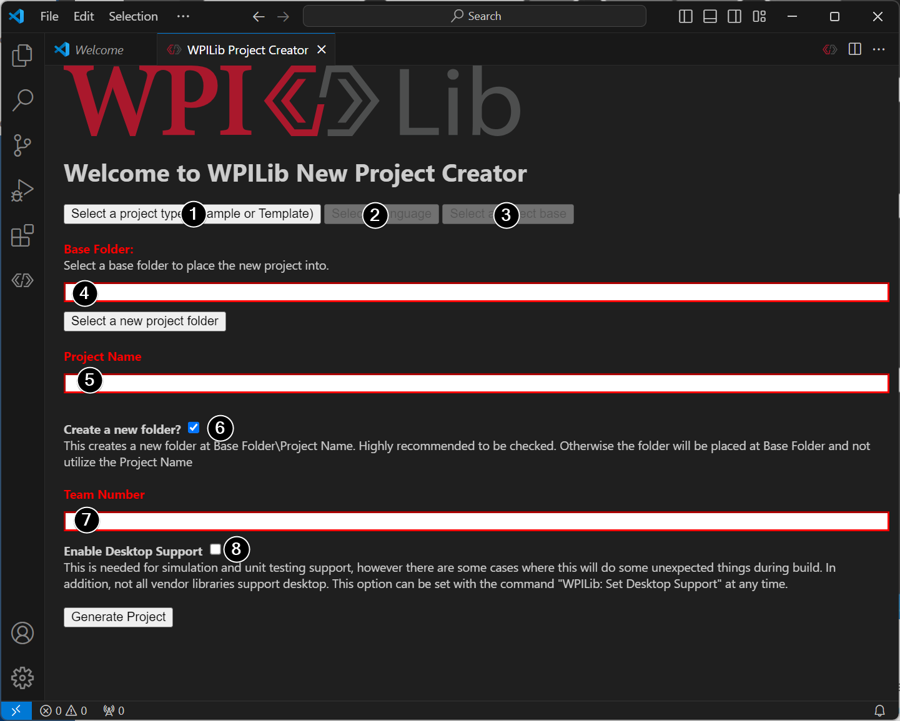
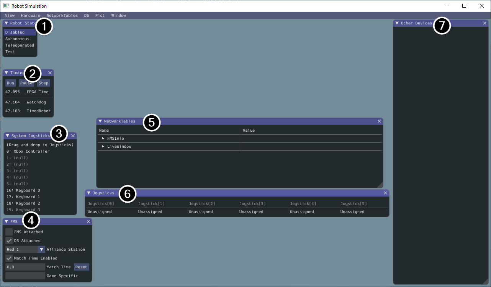
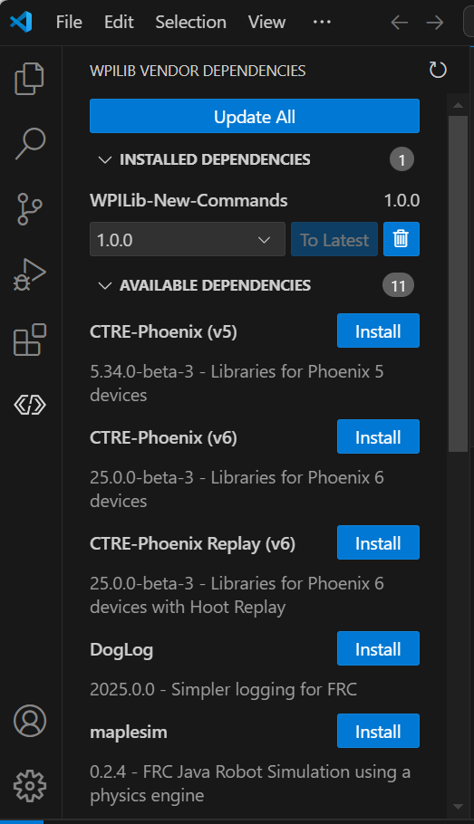
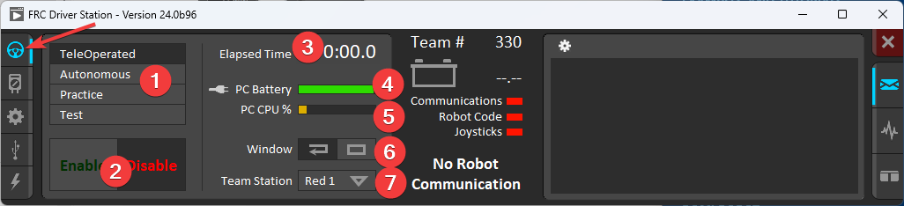

Deck 1 of 12 · FRC Java crash course
A command-based Java program, built from WPILib’s template
WPILib 2026 · Java · Command-based
Overview
One small program: hold a button and a motor spins. It starts from WPILib’s Command Robot template, the base for every project in these decks.
How WPILib and command-based code fit together.
A new project from the Command Robot template.
A first binding, tested in the simulator with no robot.
One subsystem and one motor, running on a robot.
Deck 1 · Your first robot program
2
WPILib
“The standard software library provided for teams to write code for their FRC robots.”
deploy
enable
CAN
VS Code
write, build and deploy
Driver Station
enable, and send controller input
roboRIO
your Java program, running on WPILib
SPARK MAX
sets the motor power
Motor
Deck 1 · Your first robot program
WPILib docs: What is WPILib?
3
Command-based
WPILib builds the pattern around two core abstractions: commands and subsystems.
An action the robot can take. It runs when scheduled, until interrupted or finished.
Robot hardware that operates together. Only one command can use it at a time.
An event, such as a button press. Binding a command to it schedules that command.
The WPILib class that runs commands. Scheduling a command adds it to the running list.
Deck 1 · Your first robot program
WPILib docs: What Is “Command-Based” Programming?
4
Command-based
Checking the button every loop
if (condition.get()) {
if (!pressed) {
piston.set(
DoubleSolenoid.Value.kForward);
pressed = true;
}
} else {
pressed = false;
}
Declaring it once
new Trigger(condition::get)
.onTrue(Commands.runOnce(
() -> piston.set(
DoubleSolenoid.Value.kForward)));
Deck 1 · Your first robot program
WPILib docs: What Is “Command-Based” Programming?
5
Control theory
The four steps are WPILib’s Scheduler Run Sequence. Step 2 reads the buttons and starts bound commands. Step 3 runs every scheduled command.
Step 1: subsystems
each periodic() runs
Step 2: poll triggers
read the buttons, start bound commands
Step 3: run commands
each execute(), then isFinished()
Step 4: default commands
schedule them for idle subsystems
CommandScheduler.getInstance().run()
called from robotPeriodic() in Robot.java, every 20 ms
Deck 1 · Your first robot program
WPILib docs: The Command Scheduler
6
Project
In 2026 WPILib VS Code, press Ctrl+Shift+P, type WPILib and choose Create a new project. Fill in the form, click Generate Project, open the project, and click Yes I trust the authors.

Screenshot: WPILib documentation, CC BY 4.0.
1
Project type: Template
2
Language: Java
3
Project base: Command Robot
4
Base folder: any folder outside OneDrive
5
Project name: your choice
6
Create a new folder: leave it ticked
7
Team number: your team’s number
8
Enable Desktop Support: tick it
Deck 1 · Your first robot program
WPILib docs: Creating your Test Drivetrain Program
7
Project
| In src/main/java/frc/robot | What it is for | In this deck |
|---|---|---|
| Main.java | The main robot application | WPILib says not to touch it |
| Robot.java | Main control flow, and the scheduler call | No changes |
| RobotContainer.java | Holds subsystems, commands and button bindings | Both programs go here |
| Constants.java | Globally accessible constants | The motor ID and speed |
| subsystems/ | Your subsystem classes | RollerSubsystem |
| commands/ | Your command classes | Not needed in this deck |
Deck 1 · Your first robot program
WPILib docs: Structuring a Command-Based Robot Project
8
First program
| Term | What it is | Example in the template |
|---|---|---|
| class | A named block of code, usually one per file | RobotContainer |
| field | A value that a class keeps | m_driverController |
| method | A named action, called with parentheses | configureBindings() |
| import | Tells a file where to find a class | import ...button.Trigger; |
| lambda | Code passed to a method, to run later | () -> { } |
Deck 1 · Your first robot program
9
First program
RobotContainer.java
private void configureBindings() {
// Schedule `ExampleCommand` when `exampleCondition` changes to `true`
new Trigger(m_exampleSubsystem::exampleCondition)
.onTrue(new ExampleCommand(m_exampleSubsystem));
// Schedule `exampleMethodCommand` when the Xbox controller's B button is pressed,
// cancelling on release.
m_driverController.b().whileTrue(m_exampleSubsystem.exampleMethodCommand());
// Print a message when the A button is pressed.
m_driverController.a()
.onTrue(Commands.print("Hello, robot"));
}
Add import edu.wpi.first.wpilibj2.command.Commands; at the top of the file. .a() is a Trigger for the A button, and onTrue schedules the command once per press.
Deck 1 · Your first robot program
WPILib docs: Binding Commands to Triggers
10
First program
Run WPILib: Simulate Robot Code, keep Sim GUI selected and press Ok.

Screenshot: WPILib documentation, CC BY 4.0. Robot State now also has a Disconnected row.
3
System Joysticks
Drag Keyboard 0 from this window.
6
Joysticks
Drop it on Joystick[0], which is port 0.
1
Robot State
Click Teleoperated.
Z
The Z key
Click the simulator window, then press Z. Keyboard 0 sends button 1, the A button, and Hello, robot prints in the VS Code terminal.
Deck 1 · Your first robot program
WPILib docs: Simulation Specific User Interface Elements
11
Common mistake
What you see
error: cannot find symbol, pointing at Commands, then BUILD FAILED.
Why it happens
Java only knows a class if the file imports it, and this file has no import for Commands.
The fix
Add the import at the top of the file. The first error names the file and the line.
RobotContainer.java:37: error: cannot find symbol
.onTrue(Commands.print("Hello, robot"));
^
symbol: variable Commands
Deck 1 · Your first robot program
12
Exercise
1.
Add the import and the binding, then run WPILib: Simulate Robot Code.
2.
Drag Keyboard 0 onto Joystick[0] and click Teleoperated.
3.
Press Z and read the message in the VS Code terminal.
4.
Close the simulator. Add a binding on .x() with a different message.
5.
Run it again. On Keyboard 0, the C key is the X button.
Done when: Z and C print two different messages.
Deck 1 · Your first robot program
13
One motor
A vendor dependency is how a vendor adds its library to a robot project. WPILib does not include code for the SPARK MAX.

WPILib documentation, CC BY 4.0. Versions shown are older.
1
Open the Dependency Manager
Click the WPILib logo in the activity bar, on the left of VS Code.
2
Find REVLib
Scroll down the Available Dependencies list.
3
Click Install
The library’s file is copied into this project’s vendordeps folder.
4
Click back in the editor
VS Code builds the project when the panel loses focus.
Deck 1 · Your first robot program
WPILib docs: 3rd Party Libraries
14
Best practice
Put CAN IDs and speeds in Constants.java, not in the middle of the code.
The template includes this class for robot-wide constants. Add this inside it, and set kMotorId to the CAN ID of your SPARK MAX.
public static class RollerConstants {
// The feeder roller on the 2026 KitBot. Must match REV Hardware Client 2.
public static final int kMotorId = 6;
// Output from -1 to 1. 0.3 is 30% of battery voltage.
public static final double kSpeed = 0.3;
}
Deck 1 · Your first robot program
WPILib docs: Structuring a Command-Based Robot Project
15
One motor
subsystems/RollerSubsystem.java
import static frc.robot.Constants.RollerConstants.*;
import com.revrobotics.spark.SparkLowLevel.MotorType;
import com.revrobotics.spark.SparkMax;
import edu.wpi.first.wpilibj2.command.Command;
import edu.wpi.first.wpilibj2.command.SubsystemBase;
1 public class RollerSubsystem extends SubsystemBase {
2 private final SparkMax m_motor =
2 new SparkMax(kMotorId, MotorType.kBrushed);
3 public Command spinCommand() {
return startEnd(
4 () -> m_motor.set(kSpeed),
4 () -> m_motor.set(0));
}
}
1
SubsystemBase
WPILib’s recommended base class. It registers the subsystem with the scheduler.
2
Private hardware
Only this class can use the motor. A CIM is kBrushed.
3
A command factory
A method that returns a command. WPILib ends these names in Command.
4
startEnd
First lambda when scheduled, second when canceled.
Deck 1 · Your first robot program
WPILib docs: Subsystems
16
One motor
RobotContainer.java
import frc.robot.subsystems.RollerSubsystem;
// The robot's subsystems and commands are defined here...
private final ExampleSubsystem m_exampleSubsystem = new ExampleSubsystem();
private final RollerSubsystem m_roller = new RollerSubsystem();
private void configureBindings() {
// The template's two bindings stay here.
m_driverController.a()
.whileTrue(m_roller.spinCommand());
}
This replaces the Hello, robot line. whileTrue schedules the command on press and cancels it on release.
Deck 1 · Your first robot program
WPILib docs: Binding Commands to Triggers
17
One motor
| Binding | When the button is pressed | When it is released |
|---|---|---|
| onTrue | Schedules the command | Nothing: the command runs until it ends |
| whileTrue | Schedules the command | Cancels the command |
| toggleOnTrue | Schedules it, or cancels it if running | Nothing |
Commands.print ends by itself, so onTrue suits it. A startEnd command never ends by itself, so it needs whileTrue.
Deck 1 · Your first robot program
WPILib docs: Binding Commands to Triggers
18
Exercise
1.
Install REVLib from the Dependency Manager.
2.
Add RollerConstants inside Constants, with your SPARK MAX’s CAN ID.
3.
Right-click the subsystems folder, choose Create a new class/command, then Subsystem. Name it RollerSubsystem.
4.
Keep its package line, and replace the rest with the subsystem code.
5.
Add the field and the whileTrue binding, then run WPILib: Build Robot Code.
Done when: the terminal shows BUILD SUCCESSFUL.
Deck 1 · Your first robot program
19
Control theory
Button
Motor output (dashed)
0
20
40
60
80
100
120
140
0
0.3
1
Button (0 or 1) and motor output
Time (ms). Ticks are scheduler loops.
1
Press
Pressed at 33 ms. The 40 ms loop sets the output to 0.3.
2
Release
Released at 93 ms. The 100 ms loop sets it to 0.
3
Sample time
A change waits for the next loop, up to 20 ms.
4
Open loop
The code sets an output. Nothing measures the roller.
Deck 1 · Your first robot program
WPILib docs: The Command Scheduler
20
On the robot
1
Turn the robot on
Stay clear of moving parts from now on.
2
Connect the laptop to the roboRIO
USB or Ethernet.
3
Plug the controller into the laptop
4
Run WPILib: Deploy Robot Code
It builds if needed, then sends the program.
5
Look for BUILD SUCCESSFUL
Keep the robot on until then.
Building and deploying
Deck 1 · Your first robot program
21
On the robot

Screenshot: WPILib documentation, CC BY 4.0. The lights are red here because no robot is connected.
FRC Driver Station
Open it, and enter your team number on the Setup tab (gear icon).
Three green lights
Communications, Robot Code and Joysticks.
1
Robot Mode
Choose TeleOperated.
2
Enable, Disable
Enter disables. Space is the emergency stop.
Deck 1 · Your first robot program
WPILib docs: Running your Test Program
22
Exercise
1.
Deploy the program, open Driver Station and get three green lights.
2.
Stand clear of the motor and anything it drives.
3.
Choose TeleOperated, say “enabling” out loud, then click Enable.
4.
Hold A, then release it.
5.
Press Enter to disable.
Done when: the motor spins only while A is held.
Deck 1 · Your first robot program
23
Recap
WPILib, commands, subsystems, triggers and the CommandScheduler.
A project from the Command Robot template, and the files in it.
A binding tested in the simulator.
A subsystem with one motor, using a vendor library.
Deploying the program and running it from Driver Station.
Next: Deck 2 uses the same parts to drive the KitBot from a gamepad.
Deck 1 · Your first robot program
24
Reference
Create a project
What is command-based
Binding to triggers
Running the program
Deck 1 · Your first robot program
25